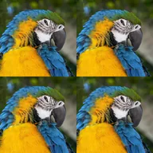

Tegel

Herhaalt het beeld in een raster.
Instellingen
| Instelling | Type | Bereik | Standaard |
|---|---|---|---|
| Schaal | Getal | 0.02 tot 1 | 0.5 |
| Verschuiving | Punt (X, Y) | -1 tot 2 | 0, 0 |
| Spiegelen | Aan of uit | – | Uit |

Herhaalt het beeld in een raster.
| Instelling | Type | Bereik | Standaard |
|---|---|---|---|
| Schaal | Getal | 0.02 tot 1 | 0.5 |
| Verschuiving | Punt (X, Y) | -1 tot 2 | 0, 0 |
| Spiegelen | Aan of uit | – | Uit |